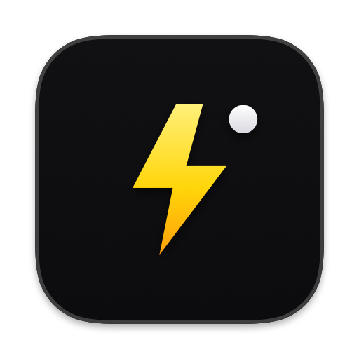

Less in your way.
Deposombe makes small Mac apps that take the unnecessary steps out of everyday work.
-

Nº 01 · In development
Rapidfire
A keyboard launcher that shows its keys.
One hotkey shows every link, app, file and Shortcut kept in it, with the letters to type marked in each name. Two or three keys open one. Nothing is assigned by hand and nothing has to be remembered.